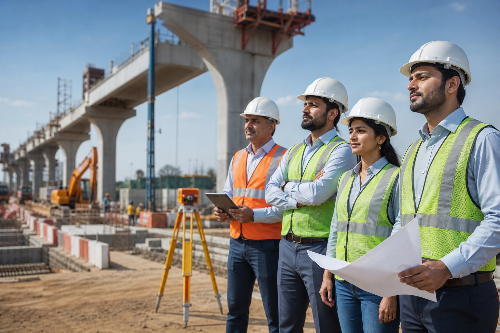

About Us
Professional construction leadership for dependable infrastructure.
NSV Infra Engineering Projects combines engineering knowledge, field supervision, and disciplined project coordination to deliver construction outcomes clients can trust.
Company Introduction
Built for quality-focused execution.
We serve layout development, road construction, and building construction requirements across Andhra Pradesh with a practical approach that aligns scope, budget, quality, and timelines.
- Infrastructure development
- Road construction
- Building projects
- Turnkey support

To become a trusted construction partner for growth-focused communities across Andhra Pradesh.
Engineering-led planning, organized site execution, and clear client communication.
Management committed to quality assurance, timely delivery, and practical solutions.
Core Values
Principles Behind the Project
Integrity
Transparent estimates, honest communication, and accountable execution.
Innovation
Practical improvements that make work faster, cleaner, and more reliable.
Quality
Material, workmanship, and process checks throughout the construction cycle.
Safety
Responsible site practices that protect teams, clients, and communities.
Leadership Team
Meet the leadership team guiding NSV Infra Engineering Projects with a commitment to quality, innovation, and excellence in infrastructure development.
Muddangula Narsimha
Founder & Chairman
Leading NSV Infra Engineering Projects with a commitment to quality, innovation, and excellence in infrastructure development.
Muddangula Sai Vamshi
Managing Director
Responsible for project execution, operational excellence, and client satisfaction across all construction activities.
Engineering Expertise
From planning to handover, every stage is structured.
Our team coordinates surveys, scope definition, resource planning, site execution, quality checks, and documentation so each project moves with clarity.
Started with local civil construction and site development works.
Expanded into road construction and layout infrastructure packages.
Strengthened project management systems and quality assurance workflows.
Focused on premium infrastructure, building, and road development projects across Andhra Pradesh.